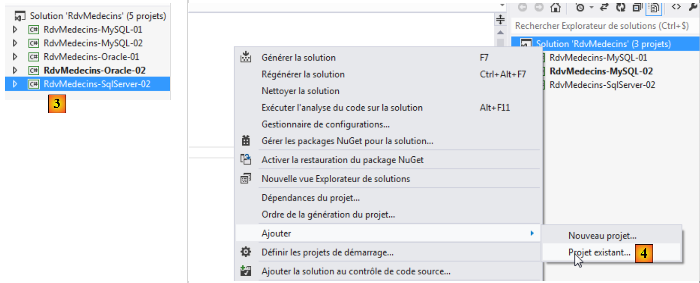
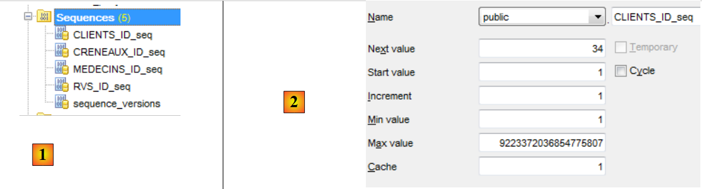
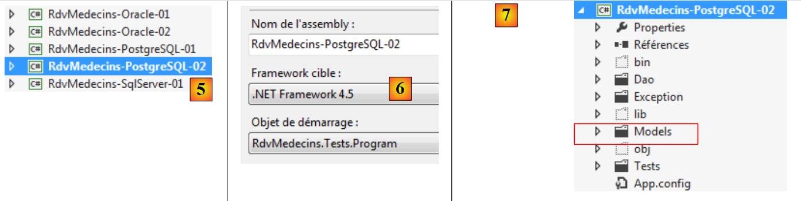

6. Casestudy met PostgreSQL 9.2.1
6.1. Installatie van de tools
De volgende tools moeten worden geïnstalleerd:
- SGBD: [http://www.enterprisedb.com/products-services-training/pgdownload#windows];
- een beheertool: EMS SQL Manager voor PostgreSQL Freeware [http://www.sqlmanager.net/fr/products/postgresql/manager/download].
In de volgende voorbeelden heeft de gebruiker postgres het wachtwoord postgres.
Laten we PostgreSQL starten en vervolgens de tool [SQL Manager Lite for PostgreSQL], waarmee we SGBD gaan beheren.
 |
- in [1] starten we SGBD en PostgreSQL vanuit de Windows-services;
- in [2] wordt de service gestart;
We starten nu het hulpprogramma [SQL Manager Lite for MySQL] waarmee we de SGBD en [3] gaan beheren.
 |
- in [4] maken we een nieuwe database aan;
- in [5] geven we de naam van de database op;
 |
- in [5] loggen we in als postgres / postgres;
- in [6], vullen we wat gegevens in;
- in [7] bevestigt men de opdracht SQL die zal worden uitgevoerd;
 |
- in [8] is de database aangemaakt. Deze moet nu worden geregistreerd in [EMS Manager]. De gegevens kloppen. We voeren [OK] uit;
- in [9] maken we verbinding;
- in [10] geeft [EMS Manager] de database weer, die voorlopig leeg is. Merk op dat de tabellen deel zullen uitmaken van een schema met de naam public [11].
We gaan nu een VS 2012-project aan deze database koppelen.
6.2. De database aanmaken op basis van de entiteiten
We beginnen met het dupliceren van de projectmap [RdvMedecins-SqlServer-01] naar [RdvMedecins-PostgreSQL-01] en [1]:
 |
- naar [2], in VS 2012 verwijderen we het project [RdvMedecins-SqlServer-01] uit de oplossing;
 |
- in [3] is het project verwijderd;
- in [4] voegen we er een ander aan toe. Dit project bevindt zich in de map [RdvMedecins-PostgreSQL-01] die we eerder hebben aangemaakt;
 |
- in [5] heet het geladen project [RdvMedecins-SqlServer-01];
- in [6], wijzigen we de naam in [RdvMedecins-PostgreSQL-01];
 |
- in [7] wordt er nog een project aan de oplossing toegevoegd. Dit project komt uit de map [RdvMedecins-SqlServer-01] van het project dat we eerder uit de oplossing hebben verwijderd;
- in [8] is het project [RdvMedecins-SqlServer-01] weer aan de oplossing toegevoegd.
Het project [RdvMedecins-PostgreSQL-01] is identiek aan het project [RdvMedecins-SqlServer-01]. We moeten enkele wijzigingen aanbrengen. In [App.config] gaan we de verbindingsstring aanpassen en het project [DbProviderFactory] moeten we aanpassen aan elk project SGBD.
<!-- verbindingsstring naar de database -->
<connectionStrings>
<add name="monContexte" connectionString="Server=127.0.0.1;Port=5432;Database=rdvmedecins-ef;User Id=postgres;Password=postgres;" providerName="Npgsql" />
</connectionStrings>
<!-- de factory provider -->
<system.data>
<DbProviderFactories>
<add name="Npgsql Data Provider" invariant="Npgsql" support="FF" description=".Net Framework Data Provider for Postgresql Server" type="Npgsql.NpgsqlFactory, Npgsql, Version=2.0.11.0, Culture=neutral, PublicKeyToken=5d8b90d52f46fda7" />
</DbProviderFactories>
</system.data>
- regel 3: de gebruiker en zijn wachtwoord;
- regels 7-9: de DbProviderFactory. Regel 8 verwijst naar een DLL [Npgsql] die we niet hebben. Deze verkrijgen we met NuGet [1]:
 |
- in [2], typ je in het zoekveld het trefwoord postgresql;
- in [3] kiest u het pakket [Npgsql]. Dit is een connector ADO.NET voor PostgreSQL;
 |
- in [4] zijn twee referenties toegevoegd;
- in [5], in [App.config] moet de juiste versie van DLL worden ingevuld. Deze is te vinden in de eigenschappen ervan.
In het bestand [Entites.cs] moet het schema van de tabellen die zullen worden gegenereerd, worden aangepast:
[Table("MEDECINS", Schema = "public")]
public class Medecin : Personne
{...}
[Table("CLIENTS", Schema = "public")]
public class Client : Personne
{...}
[Table("CRENEAUX", Schema = "public")]
public class Creneau
{...}
[Table("RVS", Schema = "public")]
public class Rv
{...}
We hebben eerder bij het aanmaken van een database PostgreSQL gezien dat de tabellen tot een schema met de naam 'public' behoorden.
We configureren de uitvoering van het project:
 |
- in [1] geven we de assembly die gegenereerd gaat worden een andere naam;
- in [2], evenals een andere standaardnaamruimte;
- in [3] geven we aan welk programma moet worden uitgevoerd.
In dit stadium zijn er geen compilatiefouten. Laten we het programma [CreateDB_01] uitvoeren. We krijgen de volgende uitzondering:
We herinneren ons dat we dezelfde fout hebben gehad met MySQL en Oracle. Dit heeft te maken met het type van het veld Timestamp in de entiteiten. We brengen dezelfde wijziging aan als bij Oracle. In de entiteiten vervangen we de drie regels
[Column("TIMESTAMP")]
[Timestamp]
public byte[] Timestamp { get; set; }
door de volgende:
[ConcurrencyCheck]
[Column("VERSIONING")]
public int? Versioning { get; set; }
We wijzigen het type van de kolom van byte[] naar int?. In SGBD zullen we opgeslagen procedures gebruiken om dit geheel getal met één te verhogen telkens wanneer een rij wordt ingevoegd of gewijzigd.
We voeren de bovenstaande wijziging door voor de vier entiteiten en voeren de toepassing vervolgens opnieuw uit. We krijgen dan de volgende foutmelding:
Regel 1 geeft aan dat de connector ADO.NET van PostgreSQL de bestaande database niet kan verwijderen. Precies zoals bij Oracle. We moeten de database [RDVMEDECINS-EF] dus handmatig aanmaken met de tool [EMS Manager for PostgreSQL]. We beschrijven niet alle stappen, maar alleen de belangrijkste.
De database PostgreSQL ziet er als volgt uit:
De tabellen
 |
- in [1] is ID de primaire sleutel van het type serial. Dit type PostgreSQL is een geheel getal dat automatisch wordt gegenereerd door SGBD.
 |
 |
 |
 |
De verschillende tabellen hebben dezelfde primaire en vreemde sleutels als in de voorgaande voorbeelden. De vreemde sleutels hebben de attributen ON, DELETE en CASCADE.
De sequenties
Net als bij Oracle hebben we hier sequenties aangemaakt. Dit zijn generatoren voor opeenvolgende getallen. Er zijn er 5: [1].
 |
- tot en met [2] zien we de eigenschappen van de reeks [CLIENTS_ID_SEQ]. Deze genereert opeenvolgende getallen met een stap van 1, beginnend bij 1 tot een zeer grote waarde.
Alle reeksen zijn volgens hetzelfde patroon opgebouwd.
- [CLIENTS_ID_seq] wordt gebruikt om de primaire sleutel van de tabel [CLIENTS] te genereren;
- [MEDECINS_ID_seq] wordt gebruikt om de primaire sleutel van de tabel [MEDECINS] te genereren;
- [CRENEAUX_ID_seq] wordt gebruikt om de primaire sleutel van de tabel [CRENEAUX] te genereren;
- [RVS_ID_seq] wordt gebruikt om de primaire sleutel van de tabel [RVS] te genereren;
- [sequence_versions] wordt gebruikt om de waarden van de kolommen [VERSIONING] van alle tabellen te genereren.
De triggers
Een trigger is een procedure die door SGBD wordt uitgevoerd vóór of na een gebeurtenis (invoegen, wijzigen, verwijderen) in een tabel. We hebben er 4: [1]:
 |
Laten we eens kijken naar de code van de trigger die de kolom van de tabel bijvult:
- regels 1-3: vóór elke bewerking INSERT of UPDATE op de tabel [CLIENTS];
- regel 4: de procedure [public.trigger_versions()] wordt uitgevoerd.
De procedure [public.trigger_versions()] is als volgt:
- regel 2: NEW staat voor de regel die zal worden ingevoegd of gewijzigd. NEW. "VERSIONING" is de kolom [VERSIONING] van deze regel. Hieraan wordt de volgende waarde van de getallengenerator toegewezen: "sequence_versions". Zo verandert de kolom ["VERSIONING"] telkens wanneer er een INSERT / UPDATE wordt uitgevoerd op de tabel [CLIENTS].
De triggers [MEDECINS_tr, CRENEAUX_tr, RVS_tr] werken op dezelfde manier. De vier kolommen ["VERSIONING"] halen hun waarden uit dezelfde reeks.
Het script voor het genereren van de tabellen van de database PostgreSQL [RDVMEDECINS-EF] is in de map [RdvMedecins / databases / postgreSQL] geplaatst. De lezer kan het laden en uitvoeren om zijn tabellen aan te maken.
Zodra dit is gebeurd, kunnen de verschillende programma’s van het project worden uitgevoerd. Ze leveren dezelfde resultaten op als met SQL Server, behalve het programma [ModifyDetachedEntities], dat om dezelfde reden crasht als bij Oracle. Het probleem wordt op dezelfde manier opgelost. Het volstaat om het programma [ModifyDetachedEntities] uit het project [RdvMedecins-Oracle-01] naar het project [RdvMedecins-PostgreSQL-01] te kopiëren.
Het programma [LazyEagerLoading] crasht met de volgende uitzondering:
De foutieve code is als volgt:
using (var context = new RdvMedecinsContext())
{
// tijdvak nr. 0
creneau = context.Creneaux.Include("Medecin").Single<Creneau>(c => c.Id == idCreneau);
Console.WriteLine(creneau.ShortIdentity());
}
Regel 1 van de uitzondering: de gemelde fout doet denken aan een join, omdat LEFT een sleutelwoord is voor de join. Omdat regel 4 van de bovenstaande code vraagt om het onmiddellijk laden van de afhankelijkheid [Medecin] van een entiteit [Creneau], heeft EF een join uitgevoerd tussen de tabellen [CRENEAUX] en [MEDECINS]. Maar het lijkt erop dat de connector ADO.NET een onjuiste opdracht SQL heeft gegenereerd. We herschrijven de code als volgt:
using (var context = new RdvMedecinsContext())
{
// tijdvak nr. 0
creneau = context.Creneaux.Find(idCreneau);
Console.WriteLine(creneau.ShortIdentity());
// de bijbehorende arts wordt geforceerd geladen
// dit is mogelijk omdat we ons nog in een open context bevinden
Medecin medecin = creneau.Medecin;
}
- regel 4: we zoeken het tijdslot zonder koppeling;
- regel 8: we halen de ontbrekende afhankelijkheid op.
Het werkt. Opnieuw zien we dat de wijziging van SGBD invloed heeft op de code. In feite is het niet de SGBD die hier de oorzaak is, maar de bijbehorende connector ADO.NET.
6.3. Meerlaagse architectuur op basis van EF 5
We keren terug naar onze casestudy die in paragraaf 2 is beschreven.
 |
We beginnen met het opbouwen van de gegevenslaag [DAO]. Hiervoor dupliceren we het consoleproject VS 2012 [RdvMedecins-SqlServer-02] in [RdvMedecins-PostgreSQL-02] [1]:
 |
- in [2] verwijderen we het project [RdvMedecins-SqlServer-02];
 |
- in [3] voegen we een bestaand project toe aan de oplossing. We halen het uit de map [RdvMedecins-PostgreSQL-02] die zojuist is aangemaakt;
- in [4] heeft het nieuwe project dezelfde naam als het verwijderde project. We gaan de naam wijzigen;
 |
- in [5] hebben we de naam van het project gewijzigd;
- in [6], we wijzigen enkele eigenschappen ervan, zoals hier de naam van de assembly;
- in [7] wordt de map [Models] verwijderd en vervangen door de map [Models] van het project [RdvMedecins-PostgreSQL-01]. De twee projecten delen namelijk dezelfde sjablonen.
 |
- in [8], de huidige referenties van het project;
- in [9] is de connector ADO.NET van PostgreSQL toegevoegd met de tool NuGet.
In het bestand [App.config] worden de gegevens van de database SQL Server vervangen door die van de database PostgreSQL. Deze zijn te vinden in het bestand [App.config] van het project [RdvMedecins-PostgreSQL-01]:
<!-- verbindingsstring naar de database -->
<connectionStrings>
<add name="monContexte" connectionString="Server=127.0.0.1;Port=5432;Database=rdvmedecins-ef;User Id=postgres;Password=postgres;" providerName="Npgsql" />
</connectionStrings>
<!-- de factory provider -->
<system.data>
<DbProviderFactories>
<add name="Npgsql Data Provider" invariant="Npgsql" support="FF" description=".Net Framework Data Provider for Postgresql Server" type="Npgsql.NpgsqlFactory, Npgsql, Version=2.0.11.0, Culture=neutral, PublicKeyToken=5d8b90d52f46fda7" />
</DbProviderFactories>
</system.data>
Ook de door Spring beheerde objecten veranderen. Momenteel hebben we:
<!-- Spring-configuratie -->
<spring>
<context>
<resource uri="config://spring/objects" />
</context>
<objects xmlns="http://www.springframework.net">
<object id="rdvmedecinsDao" type="RdvMedecins.Dao.Dao,RdvMedecins-SqlServer-02" />
</objects>
</spring>
Regel 7 verwijst naar de assembly van het project [RdvMedecins-SqlServer-02]. De assembly is nu [RdvMedecins-PostgreSQL-02].
Nu dit is gebeurd, zijn we klaar om de test van de laag [DAO] uit te voeren. Eerst moet de database worden gevuld (programma [Fill] van het project [RdvMedecins-PostgreSQL-01]). Het testprogramma crasht met de volgende uitzondering:
Regel 13: het bericht geeft aan dat de fout is opgetreden in de methode [GetCreneauxMedecin] van de laag [DAO]. Deze methode is als volgt:
// lijst met beschikbare tijdvakken van een bepaalde arts
public List<Creneau> GetCreneauxMedecin(int idMedecin)
{
// lijst met tijdvakken
try
{
// persistentiecontext openen
using (var context = new RdvMedecinsContext())
{
// de arts met zijn beschikbare tijdvakken ophalen
Medecin medecin = context.Medecins.Include("Creneaux").Single(m => m.Id == idMedecin);
// de lijst met afspraken van de arts wordt teruggestuurd
return medecin.Creneaux.ToList<Creneau>();
}
}
catch (Exception ex)
{
throw new RdvMedecinsException(3, "GetCreneauxMedecin", ex);
}
}
Op regel 11 herkennen we het sleutelwoord Include, dat al eens een eerder programma heeft laten crashen. De vorige code kan worden vervangen door de volgende:
// lijst met beschikbare tijdvakken van een bepaalde arts
public List<Creneau> GetCreneauxMedecin(int idMedecin)
{
// lijst met beschikbare tijdvakken
try
{
// context voor persistentie openen
using (var context = new RdvMedecinsContext())
{
// de lijst met afspraken van de arts wordt geretourneerd
return context.Creneaux.Where(c => c.MedecinId == idMedecin).ToList<Creneau>();
}
}
catch (Exception ex)
{
throw new RdvMedecinsException(3, "GetCreneauxMedecin", ex);
}
}
De nieuwe code lijkt zelfs logischer dan de oude. Hoe dan ook, deze keer slaagt het testprogramma.
We maken de DLL van het project aan, net zoals we dat hebben gedaan voor het project [RdvMedecins-SqlServer-02], en we verzamelenalle DLL-bestanden van het project in een map [lib] die is aangemaakt in [RdvMedecins-PostgreSQL-02]. Dit worden de referenties voor het webproject [RdvMedecins-PostgreSQL-03] dat hierna volgt.
 |
We zijn nu klaar om de laag [ASP.NET] van onze applicatie te bouwen:
 |
We gaan uit van het project [RdvMedecins-SqlServer-03]. We dupliceren de map van dit project naar [RdvMedecins-PostgreSQL-03] en [1]:
 |
- naar [2], met VS 2012 Express voor het web, openen we de oplossing van de map [RdvMedecins-PostgreSQL-03];
- in [3] wijzigen we zowel de naam van de oplossing als de naam van het project;
 |
- in [4], de huidige projectreferenties;
- in [5] verwijderen we deze;
- in [6], om ze te vervangen door verwijzingen naar de DLL die we zojuist hebben opgeslagen in een map [lib] van het project [RdvMedecins-PostgreSQL-02].
Nu hoeven we alleen nog maar het bestand [Web.config] aan te passen. We vervangen de huidige inhoud ervan door de inhoud van het bestand [App.config] uit het project [RdvMedecins-PostgreSQL-02]. Zodra dit is gebeurd, voeren we het webproject uit. Het werkt. Vergeet niet de database te vullen voordat je de webapplicatie uitvoert.